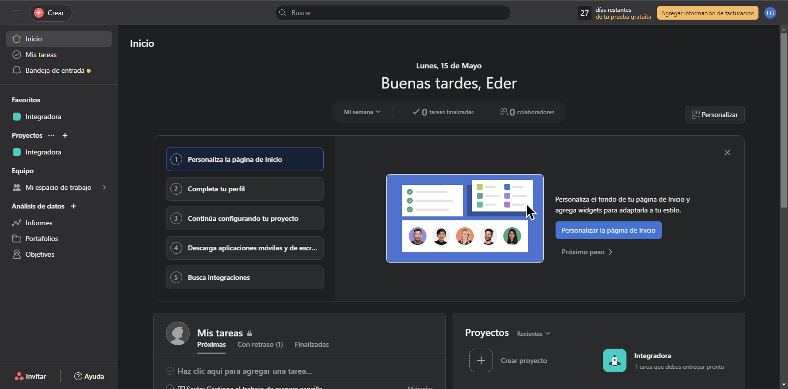

| Contenido | |
| Propósito del Software | Proceso de instalación |
| Video de instalación (Auxiliar) | Evidencia de instalación |
Asana es una herramienta de gestión de proyectos y tareas en línea. Es un software diseñado para ayudar a los equipos a colaborar, organizar y dar seguimiento a sus proyectos y tareas en un entorno digital. Con Asana, los equipos pueden crear proyectos, asignar tareas, establecer fechas de vencimiento, establecer prioridades, compartir archivos y comunicarse dentro de la plataforma. Proporciona una forma estructurada y visual para gestionar el flujo de trabajo y mantener a todos los miembros del equipo informados sobre el progreso de las tareas. Asana permite a los usuarios crear tableros de proyectos, listas de tareas, diagramas de Gantt y otras visualizaciones para ayudar a organizar y visualizar el trabajo. También se integra con otras herramientas y aplicaciones populares, como Slack, Dropbox y Google Drive, lo que facilita la colaboración y la sincronización de información entre diferentes plataformas. En resumen, Asana es una plataforma en línea que ayuda a los equipos a gestionar sus proyectos y tareas de manera eficiente, fomentando la colaboración y la comunicación entre los miembros del equipo.
Para instalar Asana tienes dos opciones. Si quieres utilizar la aplicación web deberás hacer lo siguiente:
Si prefieres instalar la aplicación de Asana, sigue estos pasos:
En este video se explica el proceso de instalación de Asana, así como algunos consejos
Esta es la evidencia de que uso la aplicación web
